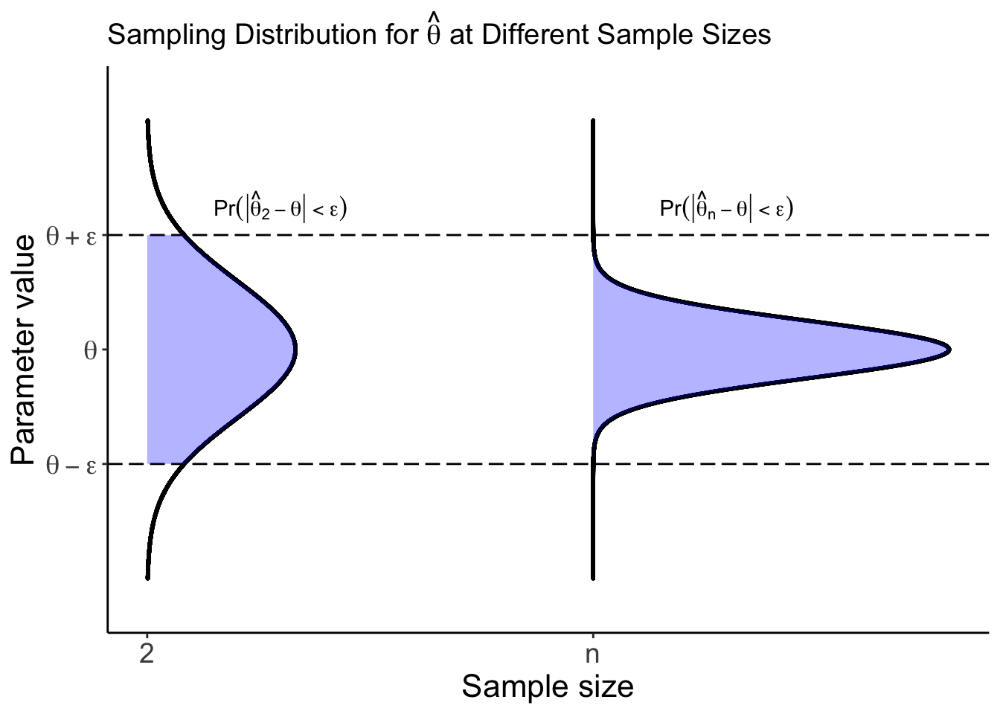

5 Consistency
The properties of estimators that we’ve covered thus far (with the exception of asymptotic unbiasedness) have all been what are called finite sample properties. All we mean by this is that our sample size (\(n\)) is less than infinity (hence: finite). In practice of course, our sample size will always be less than infinity; however, it is still nice to know what happens to our estimators (in terms of bias, variance, etc.) as our sample size gets really really large. Much of Frequentist statistics relies on asymptotic (read: infinite sample size) theory to quantify our uncertainty via confidence intervals, for example.
Consistency is one such asymptotic property that we care about. As opposed to asymptotic unbiasedness, consistency tells us something about the entire shape of a distribution, as opposed to just the center of our distribution. Prof. Brianna Heggeseth and Prof. Kelsey Grinde have a great visual for this below:
The idea here is that as our sample size gets large (as we move to the right on the x-axis), consistency tells us something about the entire distribution of our estimator being within some boundary. Asymptotic unbiasedness, on the other hand, only tells us about whether the center of our distribution (a single point!) lies where it “should” (at the truth).
Why do we care about consistency? Because we care about uncertainty! It would be really unfortunate if, in collecting more and more data, we didn’t get any more certain about the true parameter we’re trying to estimate. Intuitively, we want to be more confident (less uncertain) in our estimators when we have larger sample sizes. This is exactly what consistency is concerned with. How do we prove whether or not an estimator is consistent? (Typically) Chebyshev’s Inequality, which we state and prove below.
5.1 Learning Objectives
By the end of this chapter, you should be able to…
- Distinguish between finite sample properties and asymptotic properties of estimators
- Prove (using Chebyshev’s inequality) whether or not an estimator is consistent
5.2 Concept Questions
What is the distinction between a fixed sample property and an asymptotic property of an estimator?
Describe, in your own words, what it means for an estimator to be consistent.
How can we use Chebyshev’s inequality to show that an estimator is consistent?
Which of the estimation techniques we’ve seen so far yield consistent estimators?
5.3 Definitions
You are expected to know the following definitions:
Asymptotically Unbiased
An estimator \(\hat{\theta} = g(X_1, \dots, X_n)\) is an asymptotically unbiased estimator for \(\theta\) if \(\underset{n \to \infty}{\text{lim}} E[\hat{\theta}] = \theta\).
Consistent
An estimator \(\hat{\theta}_n = h(X_1, \dots, X_n)\) is consistent for \(\theta\) if it converges in probability to \(\theta\). That is, for all \(\epsilon > 0\),
\[ \underset{n \to \infty}{\text{lim}} \Pr(| \hat{\theta}_n - \theta | < \epsilon) = 1 \]
Note that we write our estimator with a subscript \(n\) here to clarify that our estimator depends on our sample size. There is an alternative \(\epsilon-\delta\) definition of consistency, but we won’t focus on it for this course.
Weak Law of Large Numbers
For independent and identically distributed random variables \(X_1, \dots, X_n\) with finite expectation \(\mu < \infty\),
\[ \underset{n \to \infty}{\text{lim}} \Pr(| \overline{X} - \mu | < \epsilon) = 1 \]
Alternatively, we can write that as \(n \to \infty\), \(\overline{X} \overset{p}{\to} \mu\), where “\(\overset{p}{\to}\)” denotes convergence in probability.
5.4 Theorems
Chebyshev’s Inequality
Let \(W\) be a random variable with mean \(\mu\) and variance \(\sigma^2\). Then for any \(\epsilon > 0\),
\[ \Pr(|W - \mu| < \epsilon) \geq 1 - \frac{\sigma^2}{\epsilon^2}, \]
or, equivalently,
\[ \Pr(|W - \mu| \geq \epsilon) \leq \frac{\sigma^2}{\epsilon^2}. \]
Proof.
Let \(\epsilon > 0\). Then
\[\begin{align*} \sigma^2 & = \text{Var}(W) \\ & = \int_{-\infty}^\infty (w-\mu)^2 f_W(w)dw \\ & = \int_{-\infty}^{\mu - \epsilon} (w-\mu)^2 f_W(w)dw + \int_{\mu - \epsilon}^{\mu + \epsilon} (w-\mu)^2 f_W(w)dw + \int_{\mu + \epsilon}^\infty (w-\mu)^2 f_W(w)dw \\ & \ge \int_{-\infty}^{\mu - \epsilon} (w-\mu)^2 f_W(w)dw + 0 + \int_{\mu + \epsilon}^\infty (w-\mu)^2 f_W(w)dw \\ &= \int_{|w-\mu|\ge \epsilon} (w-\mu)^2 f_W(w)dw \\ & \ge \int_{|w-\mu|\ge \epsilon} \epsilon^2 f_W(w)dw \\ & = \epsilon^2 \int_{|w-\mu|\ge \epsilon} f_W(w)dw\\ & = \epsilon^2 P(|W-\mu| \ge \epsilon) \end{align*}\]
and rearranging yields
\[\begin{align*} \sigma^2 & \geq \epsilon^2 P(|W-\mu| \ge \epsilon) \\ P(|W-\mu| \geq \epsilon) & \leq \frac{\sigma^2}{\epsilon^2} \end{align*}\]
as desired.
Corollary 1: If \(\hat{\theta}_n\) is an unbiased estimator for \(\theta\) and \(\underset{n \to \infty}{\text{lim}} Var(\hat{\theta}_n) = 0\), then \(\hat{\theta}_n\) is consistent for \(\theta\). (You’ll prove this corollary on a problem set!)
Corollary 2: If \(\hat{\theta}_n\) is an asymptotically unbiased estimator for \(\theta\) and \(\underset{n \to \infty}{\text{lim}} Var(\hat{\theta}_n) = 0\), then \(\hat{\theta}_n\) is consistent for \(\theta\).
Note that the second corollary is a bit stronger than the first one, in that the first corollary actually implies the second. If an estimator is unbiased, then it is certainly asymptotically unbiased as well.
5.5 Worked Examples
Problem 1: Suppose \(X_1, \dots, X_n \overset{iid}{\sim} N(\mu, \sigma^2)\). Show that the MLE for \(\sigma^2\) is asymptotically unbiased.
Solution:
The MLE for \(\sigma^2\) is given by \(\frac{1}{n} \sum_{i = 1}^n (X_i - \overline{X})^2\) (see the MLE section of the course notes, worked example problem 2), and has expectation \(\left( \frac{n-1}{n} \right)\sigma^2\) (see the Properties section of the course notes, worked example problem 6). To show that this estimator is asymptotically unbiased, note that we have
\[\begin{align*} \underset{n\to \infty}{\text{lim}} E[\hat{\sigma^2}_{MLE}] & = \underset{n\to \infty}{\text{lim}} \left( \frac{n-1}{n} \right) \sigma^2 \\ & = \left( 1 \right) \sigma^2 \\ & = \sigma^2 \end{align*}\]
and therefore, the MLE for \(\sigma^2\) is asymptotically unbiased.
Problem 2: Suppose \(Y_1, \dots, Y_n \overset{iid}{\sim} Uniform(0, \theta)\), and recall that \(\hat{\theta}_{MLE} = Y_{(n)}\) with \(f_{Y_{(n)}}(y \mid \theta) = \frac{n}{\theta^n} y^{n-1}\), \(0 \leq y \leq \theta\). Prove that \(\hat{\theta}_{MLE}\) is a consistent estimator for \(\theta\).
Solution:
To prove that \(\hat{\theta}_{MLE}\) is consistent, we must first show that \(\hat{\theta}_{MLE}\) is (either) unbiased or asymptotically unbiased, and then we must show that the variance of \(\hat{\theta}_{MLE}\) tends to zero as \(n \to \infty\). To begin, note that
\[\begin{align*} E\left[\hat{\theta}_{MLE}\right] & = \int_{0}^\theta y f_{Y_{(n)}} (y \mid \theta) dy \\ & = \int_{0}^\theta y \left( \frac{n}{\theta^n} y^{n-1} \right) dy \\ & = \frac{n}{\theta^n} \int_0^\theta y^n dy \\ & = \frac{n}{\theta^n} \left( \frac{y^{n + 1}}{n + 1} \bigg|_0^\theta \right) \\ & = \frac{n}{\theta^n} \left( \frac{\theta^{n + 1}}{n + 1} \right) \\ & = \left( \frac{n}{n + 1} \right) \theta \end{align*}\]
and so \(\hat{\theta}_{MLE}\) is biased. It is, however, asymptotically unbiased. Note that \(\left( \frac{n}{n + 1} \right) \overset{n \to \infty}{\to} 1\), and therefore \(E\left[\hat{\theta}_{MLE}\right] \overset{n \to \infty}{\to} \theta\).
All that’s left is to show that \(Var\left[\hat{\theta}_{MLE}\right] \overset{n \to \infty}{\to} 0\). We can write
\[\begin{align*} E\left[Y_{(n)}^2\right] & = \int_0^\theta y^2 \frac{ny^{n-1}}{\theta^n} dy \\ & = \frac{n}{\theta^n} \int_0^\theta y^{n + 1} dy \\ & = \frac{n}{\theta^n} \left( \frac{y^{n + 2}}{n + 2} \bigg|_0^\theta \right) \\ & = \frac{n}{\theta^n} \left( \frac{\theta^{n + 2}}{n + 2}\right) \\ & = \left( \frac{n}{n + 2} \right) \theta^2 \end{align*}\]
and therefore
\[\begin{align*} \underset{n \to \infty}{\text{lim}} Var\left[\hat{\theta}_{MLE}\right] & = \underset{n \to \infty}{\text{lim}} \left[ E\left[Y_{(n)}^2\right] - E\left[Y_{(n)}\right]^2 \right]\\ & = \underset{n \to \infty}{\text{lim}} \left[ \left( \frac{n}{n + 2} \right) \theta^2 - \left( \frac{n}{n + 1} \right)^2 \theta^2 \right] \\ & = \theta^2 \underset{n \to \infty}{\text{lim}} \left[ \left( \frac{n}{n + 2} \right) - \left( \frac{n}{n + 1} \right)^2\right] \\ & = \theta^2 \underset{n \to \infty}{\text{lim}} \left[ \frac{n}{n + 2} - \frac{n^2}{(n + 1)^2} \right] \\ & = \theta^2 \underset{n \to \infty}{\text{lim}} \left[ \frac{n(n + 1)^2 - n^2 (n + 2)}{(n + 2)(n + 1)^2} \right] \\ & = \theta^2 \underset{n \to \infty}{\text{lim}} \left[ \frac{n(n^2 + 2n + 1) - n^3 -2n^2}{(n + 2)(n^2 + 2n + 1)} \right] \\ & = \theta^2 \underset{n \to \infty}{\text{lim}} \left[ \frac{n^3 + 2n^2 + n - n^3 -2n^2}{n^3 + 2n^2 + 2n^2 + 5n + 2} \right] \\ & = \theta^2 \underset{n \to \infty}{\text{lim}} \left[ \frac{n}{n^3 + 4n^2 + 5n + 2} \right] \\ & = 0 \end{align*}\]
where the last term goes to zero because \(\frac{n}{n^3} \to 0\) as \(n \to \infty\). Therefore, \(\hat{\theta}_{MLE}\) is a consistent estimator for \(\theta\).